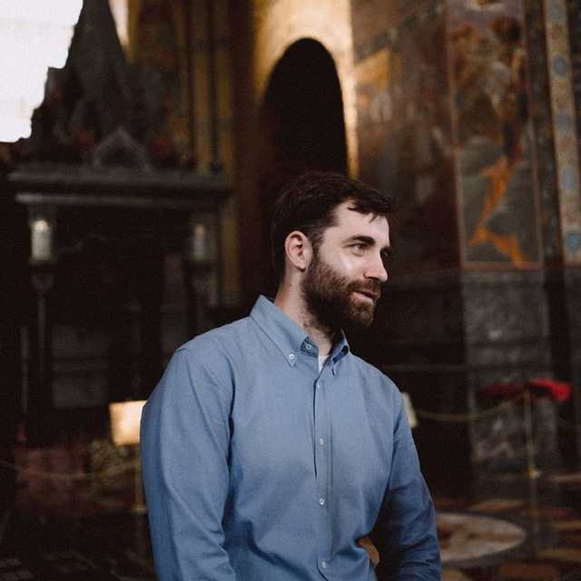

Обо мне
Александр, 32 года. Санкт Петербург. Последние 3 года работаю QA тестировщиком.
Квалификация
Квалификация: - Опыт работы с инструментами API, включая Postman (скрипты, автотесты, переменные) и интеграция с Swagger и Redoc. - Тестирование REST API и SOAP, что позволило выявить и устранить возможные ошибки. - Знания в работе с базами данных PostgreSQL и MongoDB, выполнение SQL-запросов средней сложности (Select, Join, Group By).
Технологии
- Метрики и аналитика: Metabase, Compass, Dbeaver, Charles.
- Мониторинг и визуализация данных: Sentry, Kibana, Grafana.
- Работа с Kafka: чтение и размещение сообщений в топиках.
- Основы Linux и Git: знание базовых команд- Дополнительные инструменты: Kafka UI, GitHub.
- Работа в Devtools.
- Люблю красивые и аккуратные чек-листы, поэтому всегда завожу их в виде mind map в Miro.